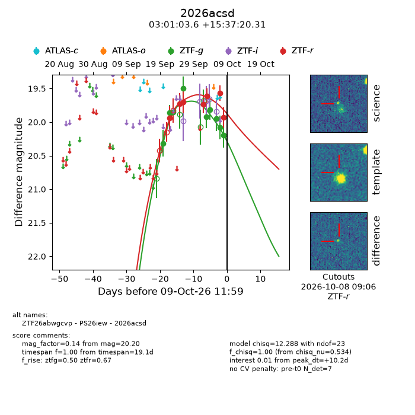
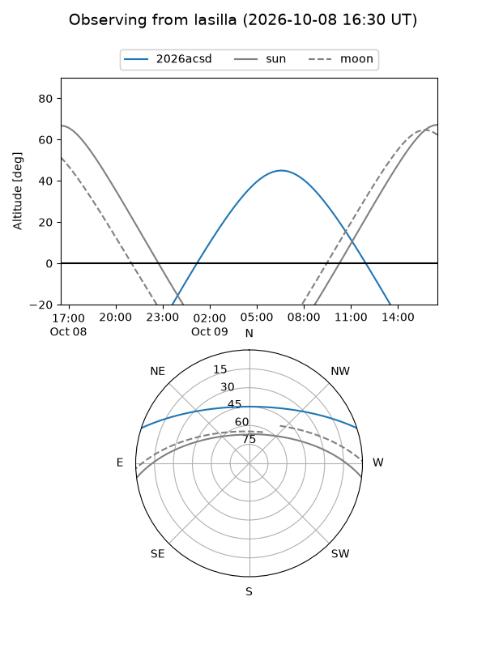
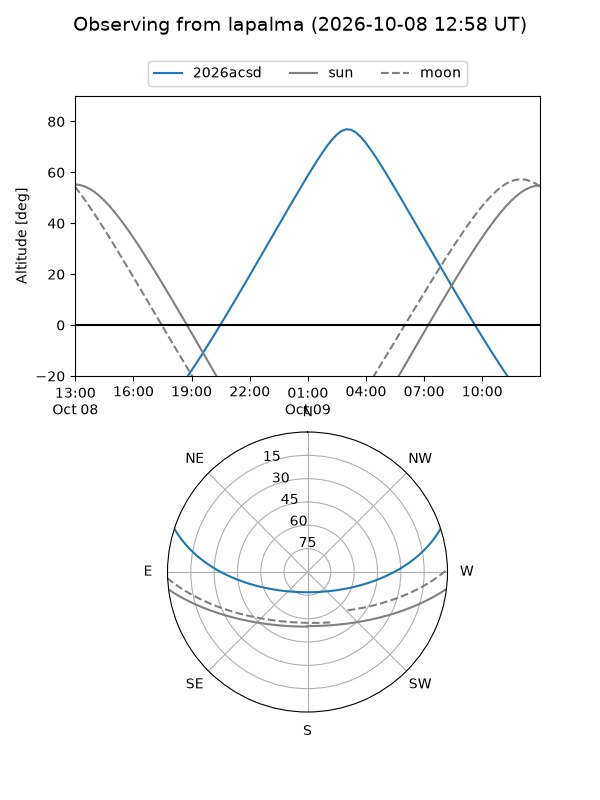
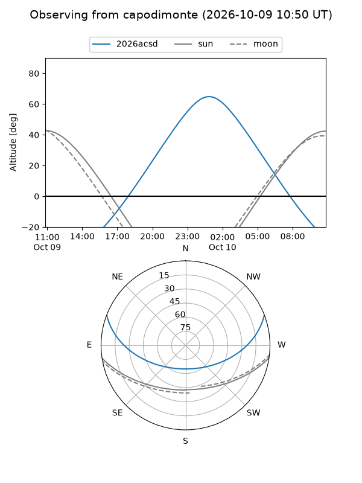
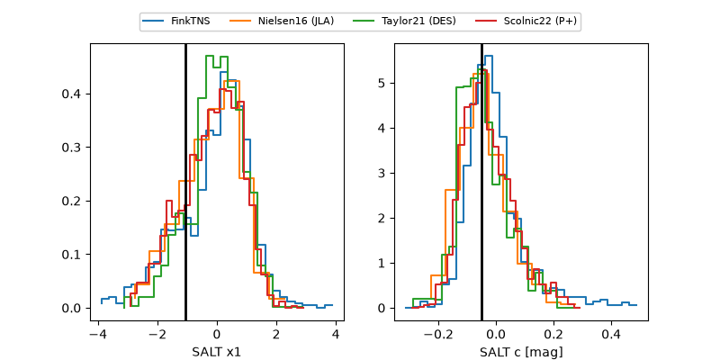

2026acsd
Target 2026acsd at 2026-10-09 12:01
Aliases and brokers:
FINK-ZTF: ztf.fink-portal.org/ZTF26abwgcvp
Lasair-ZTF: lasair-ztf.lsst.ac.uk/objects/ZTF26abwgcvp
ALeRCE-ZTF: alerce.online/object/ZTF26abwgcvp
YSE-PZ: ziggy.ucolick.org/yse/transient_detail/2026acsd
TNS name: wis-tns.org/object/2026acsd
Direct TNS query: direct search
alt names
ZTF26abwgcvp (ztf,fink_ztf)
2026acsd (tns,yse)
PS26iew (panstarrs)
Coordinates:
equatorial (ra, dec) = 45.2650,+15.62231
equatorial (HMS+DMS) = 03:01:03.61,+15:37:20.31
galactic (l, b) = (163.1463,-36.93032)
Flags:
peak dt: +10.2
Photometry:
last ztfg=20.20, ztfr=19.93
9 ztfg, 7 ztfr detections
Lightcurve

Visibility



Additional plots
